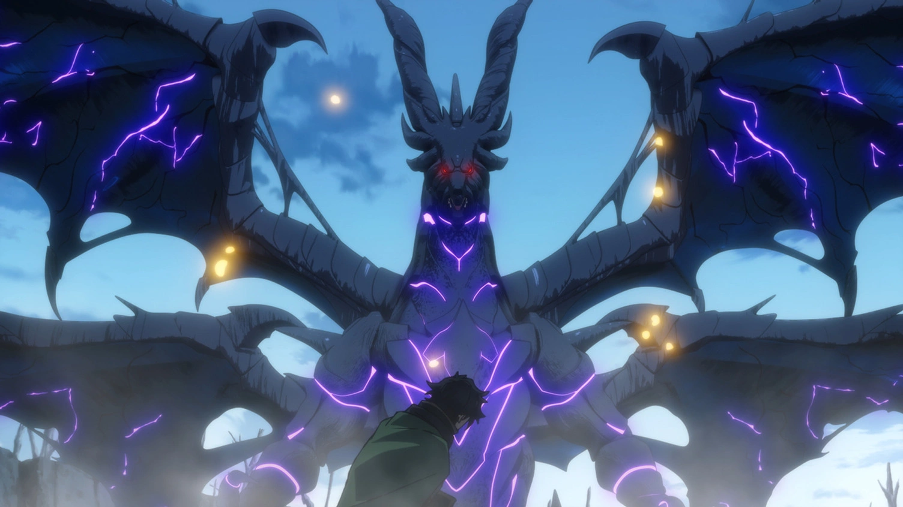

Raça Dragão

Voltar para Raças
Dragões
Os dragões são seres lendários, dotados de uma força e sabedoria incomparáveis. Nascidos da essência dos elementos primordiais, eles são os guardiões dos segredos mais antigos do mundo. Sua forma humana é uma manifestação de sua habilidade de se adaptar e conviver com outras raças, mas sua verdadeira natureza é revelada em sua forma draconiana, onde seu poder é desencadeado em toda a sua magnitude.
Características:
- Longevidade Milenar: Dragões vivem por milhares de anos, acumulando conhecimento e poder ao longo das eras. Sua experiência os torna estrategistas excepcionais.
- Vinculo Elemental: Cada dragão está intrinsecamente ligado a um elemento primordial, como fogo, gelo, eletricidade, terra, luz, sombra, vazio, infinito. Esse vínculo define suas habilidades e personalidade.
- Forma Humana: Dragões podem assumir uma forma humana para se infiltrar entre outras raças. Nessa forma, eles retêm parte de suas habilidades, mas sua verdadeira força só é revelada em sua forma draconiana.
- Forma Híbrida: Uma forma intermediária entre humano e dragão, onde o corpo do dragão ganha características draconianas, como escamas parciais, garras afiadas e olhos brilhantes. Nessa forma, sua energia e força são aumentadas em 50%, permitindo combates mais intensos sem perder completamente a agilidade humana.
- Forma Dragão: Uma forma que o dragão alcança todo o seu poder. Ele ganha caracteristicas de uma verdadeira criatura mitica, conseguindo um buff de 100% em energia e força.
Habilidades Únicas:
- Sopro Primordial: Um ataque devastador que canaliza o elemento nativo do dragão. O sopro pode incendiar florestas, congelar mares ou desencadear tempestades elétricas, dependendo do elemento.
- Barreira Elemental: Dragões podem conjurar uma barreira de energia que os protege de ataques baseados em seu elemento nativo. Além disso, eles são imunes a efeitos adversos relacionados ao seu elemento.
- Visão do Predador: Sua visão aguçada permite enxergar através da escuridão mais absoluta e detectar presas ou inimigos a quilômetros de distância.
- Força do Titã: Em sua forma draconiana, dragões possuem uma força física incomparável, capaz de destruir fortalezas e levantar montanhas com facilidade.
- Presença Aterrorizante: A mera presença de um dragão pode paralisar inimigos mais fracos, causando medo e desespero. Criaturas inferiores podem fugir ou se render diante de um dragão.
- Regeneração Draconiana: Dragões possuem uma capacidade regenerativa incrível, curando ferimentos graves em questão de minutos. Ferimentos menores são curados quase instantaneamente.
Habilidade Suprema
Forma Dragão Suprema
Requer: 1M pontos em Força
O Dragão pode se transformar em sua forma suprema, ganhando um buff de 2x em todos os seus atributos. Ganha acesso ao conceito do seu proprio elemento primordial, se tornando um so com a realidade.